01Overview
Reminders was the first feature on B that belonged to the user, not the product. Everything else on the glasses, the camera, Live AI, meeting recording, was something B did to the world. A reminder is something the user puts into B and trusts it to give back later, at exactly the right moment. That shift, from capability to personal trust, is what made a seemingly small feature worth getting right.
Lenskart's ask was simple on the surface: let people set reminders either by voice through the glasses or inside the companion app, and notify them on their phone when a reminder is due. A user says "Hey Buddy, set a reminder" mid-task, cooking, driving, walking into a meeting, and carries on. My job was to make that one sentence feel completely safe, across two devices that each only do half the job.
02Where it started, and why it wasn't small
The brief arrived as a PRD with three lines of intent: let users set reminders by voice or in the app, notify them when due, keep creation under five seconds. On paper, one of the smallest features on B.
It stopped being small the moment I stopped reading it as a spec and started reading it as the person wearing the glasses. That person isn't looking at a screen. They say a sentence and look away. They never see a confirmation, never scan a list to check it saved. All they have is Buddy's voice in their ear, and they have to believe, on that alone, that what they said was captured exactly right.
That reframes the whole problem. On a phone, trust is cheap: you can see the reminder sitting in a list. On glasses, trust has to be designed into the words Buddy says back, because the spoken confirmation is the only proof the user gets. A feature that looked like "a form and a notification" was really a feature about belief.
03What made it tricky
Three problems kept resurfacing as I worked through the PRD, and each one was a design problem hiding as a requirement.
- People don't talk like a PRD. The spec listed five tidy request types. Real speech isn't tidy, people say "at 8" without AM or PM, "next Monday", "daily", or name a time that's already gone. If Buddy only understood the five clean cases, it would fail in the exact messy moments people actually use voice. So the real scope wasn't five cases; it was everything a person might plausibly say, and a sensible answer for each.
- One feature living on two devices. The glasses can only capture a reminder by voice. Viewing, editing, deleting and the actual notification all live on the phone. To the user it must feel like one seamless thing, but behind the scenes it's two systems that have to stay in sync, and the reminder still has to arrive on time even if the glasses are in a drawer.
- The PRD contradicted itself. One line said reminders could be created in the app; the state table said users couldn't create one while the glasses were unpaired or disconnected. Read literally, someone whose glasses were charging would be locked out of setting a phone reminder, absurd for a feature about reliability. Nobody had noticed because it was a rule, not a screen, and rules don't show up in a mockup review.
That third point is where my real work began. The interesting design wasn't the add-reminder form, it was the behaviour nobody had written down yet: what happens across every device state, every vague phrase, every failure.
04My role
I led this as a design manager, not just a screen designer. The deliverable that mattered most wasn't a set of mockups, it was a single, written definition of how Reminders behaves everywhere, so the AI, app, and QA teams could all build from one source instead of each inventing their own answer to the same edge case.
- Voice conversation design. Defined every way a reminder can be set by voice, what Buddy understands, the single question it's allowed to ask when something's missing, and what it assumes when the user is vague. This is the part with no UI, and it's where the feature lives or dies.
- AI voice confirmation. Scripted what Buddy says on success, failure and unsupported requests, and decided the session stays open afterwards so the user can keep talking. Because the spoken reply is the only receipt, its exact wording was a design decision, not copywriting.
- UI design. Designed the companion app end to end, onboarding, the reminder list and filters, add and edit, notifications, permissions, and the empty and error states that most specs skip.
- Text hierarchy research. Voice produces sentences of any length; my list screens assumed short titles. I researched how titles and descriptions should truncate and wrap across the app, then turned it into a rule used well beyond Reminders.
05How I thought about it, four trade-offs
Four decisions shaped the feature. I'm listing them as trade-offs on purpose: each one bought something for the user and cost something elsewhere, and naming the cost is how you know it was a real decision and not just a preference.
| Decision | Why I made it | Trade-off |
|---|---|---|
| Defaults over extra questions | Creation had to stay under five seconds while the user is mid-activity. Every follow-up question is time the user doesn't have, so Buddy guesses sensibly instead of interrogating. | Buddy sometimes guesses wrong (9 AM for a date-only reminder), so the spoken confirmation must always repeat the time back for the user to catch it. |
| Never lose what the user said | If the user trails off or goes silent, throwing the reminder away would betray the one thing the feature promises. So it's saved as unscheduled rather than discarded. | The app needed a whole Unscheduled tab to hold these half-finished reminders, a surface that only exists because we refuse to lose input. |
| Glasses are for input only | Tying delivery to the glasses would mean a reminder fails whenever they're off. Since reminders are about reliability, the phone owns all delivery; the glasses just capture. | Richer glasses-side features (announcing reminders on the lens) move to a later version. |
| Saving is never blocked | A missing notification permission should never stop a reminder from being saved, losing the user's intent over a settings toggle is the worst outcome. | Needed a gentle, persistent "Enable" chip to recover the permission later, instead of a hard block that would guarantee the save. |
06Thinking beyond the screen
The lasting output of this project wasn't visual. It was a set of decisions written down clearly enough that other people could build without guessing.
- Written rules, not just designs. I documented every voice case, default, state change and connectivity behaviour as plain rules. That meant the AI, engineering and QA teams worked from one reference instead of pinging design for each situation, fewer inconsistencies, fewer "what should happen if…" threads.
- A standard, not a one-off. The text-hierarchy rules I researched for Reminders became the app-wide standard for how titles and descriptions behave. One feature's problem turned into a decision that keeps the whole product consistent.
- Designing for failure, not just the happy path. Failure, cancellation, disconnection and duplicate commands were specified alongside the happy path, so no awkward case got silently decided by whoever happened to code it.
07Designing the voice conversation
I started from the PRD's five request types and kept asking one question: what else would a real person actually say? That list grew fast, unclear AM/PM, relative dates, times already past, recurring requests, save failures, denied permissions, and the most common case of all, a user who just stops talking.
One rule held the whole conversation together: Buddy asks at most one clarifying question, and never throws away what the user already said. Someone talking to their glasses mid-task will tolerate exactly one follow-up, a back-and-forth breaks the five-second promise and the illusion that B simply understood them.
- Complete request. "Hey Buddy, set a reminder for my dentist appointment tomorrow at 1 PM." Buddy saves it, syncs to the app, schedules the notification, and confirms by repeating it back: "Sure, I'll remind you about your dentist appointment tomorrow at 1 PM." The read-back is the trust, it lets the user catch a mistake without ever looking down.
- Missing time. "Set a reminder to call Rahul." Here Buddy spends its one allowed question, "Sure, when should I schedule this reminder?", then saves and confirms.
- No answer. If the user doesn't reply, Buddy still doesn't lose the intent. It saves an unscheduled reminder and says, "Done. I've set the reminder." The task is kept; the user can add a time later in the app.
- Failure. If saving fails on the network, server or sync, Buddy says so plainly, "I couldn't set the reminder. Please try again", rather than failing silently, which on a screenless device would read as the glasses being broken. The user can retry by voice or fall back to the app.
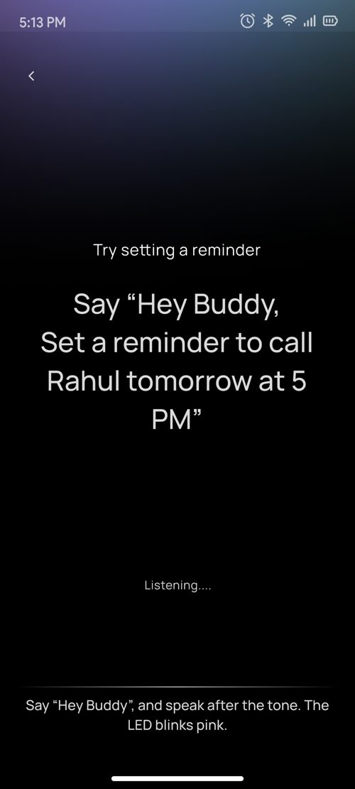
08When the user is vague
Rather than interrogate the user, Buddy fills gaps with defaults a reasonable person would choose, and only pushes back when guessing would be genuinely unsafe (like a time in the past).
| What the user says | What Buddy does | Why |
|---|---|---|
| Date only ("call Rahul tomorrow") | Sets it for 9 AM that day | A sensible start-of-day default; the read-back lets them adjust |
| Time only ("web check-in at 9 AM") | Today if the time hasn't passed, otherwise tomorrow | Matches what a person means by "9 AM" without asking which day |
| Unclear AM or PM ("at 8") | Picks the nearest upcoming slot | The soonest match is almost always the intended one |
| Relative date ("next Monday") | The upcoming Monday | Resolves natural language the way the user would in their head |
| A time that has passed | "I can't set a reminder for a time that has already passed. When in future should I remind you?" | The one case worth a question, a silent guess here would be wrong and lose trust |
| Recurring ("daily at 9 AM") | Explains it can't repeat yet, and sets a one-time reminder for tomorrow at 9 AM | Honest about the V1 limit, but still captures the intent instead of refusing |
Keeping the session safe. The conversation also has to fail gracefully. If the user interrupts Buddy, it drops what it was doing and handles the new command. If they cancel or the session ends before saving, nothing is written, no half-made reminders. If the glasses disconnect mid-sentence, no orphan reminder is created. And a repeated command never produces a duplicate. These aren't edge cases to the user, they're the difference between a feature that feels solid and one that feels flaky.
09Designing the app UI
Voice is where a reminder is created; the app is where the user confirms it exists. So the app had to make a hands-free, voice-created reminder feel real and editable.
First-time user, learn by doing. People don't fully trust "just say it" until they have seen it work once. So instead of a text explainer, onboarding has a "Try Now" that walks the user through setting one real reminder with the glasses, the listening state shows the LED blinking pink, a success screen confirms it, and a coachmark shows where it'll live. They learn the feature by succeeding at it, not by reading about it.
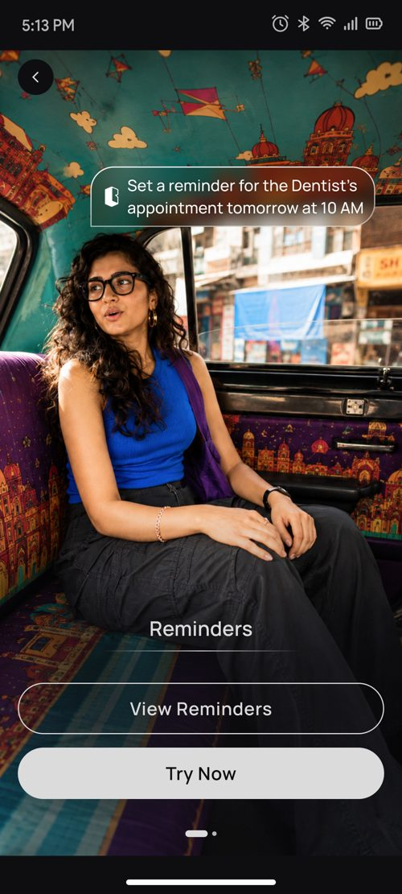
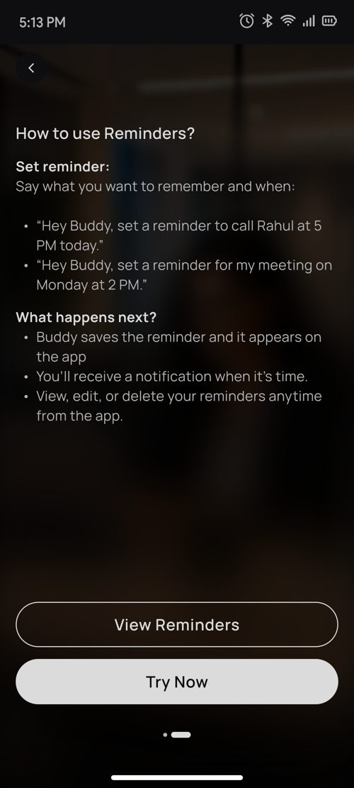
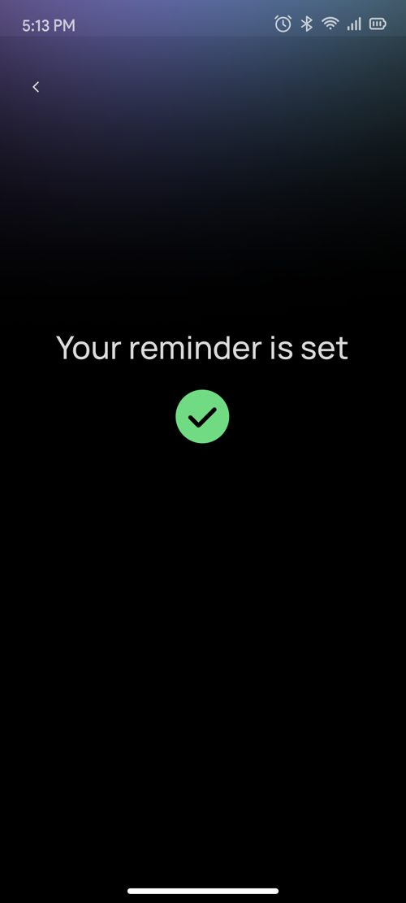
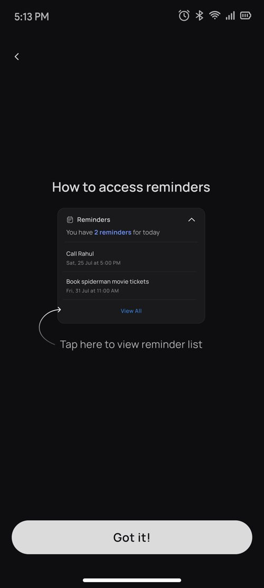
Dashboard widget. The home screen shows only today's upcoming reminders, at most two items and a count, because the dashboard is for a glance, not a database. And if nothing is scheduled today, the widget hides itself rather than showing an empty card: an empty state on a home screen is just clutter that makes the feature feel unused.
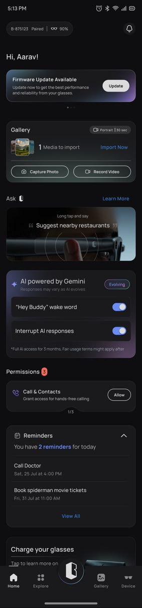
Reminder list and filters. Four tabs, each sorted for how the user actually reads that tab, upcoming-first where you're planning ahead, newest-first where you're looking back. Tapping a reminder opens a bottom sheet with full detail plus Edit and Delete. Past reminders can be deleted but not edited, because editing something that already happened has no meaning, removing the option prevents a confusing dead end.
| Tab | Sorted by | Why that order |
|---|---|---|
| All | Time of creation | A neutral, recognisable "everything I've made" view |
| Scheduled | Reminder time, upcoming first | Here the user is planning, the next thing due matters most |
| Unscheduled | Time of creation | No time to sort by; recency is the only useful order |
| Past | Reminder time, newest first | Looking back, the most recent is the most relevant |
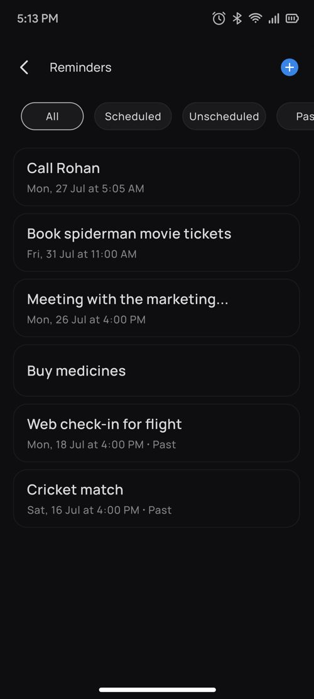
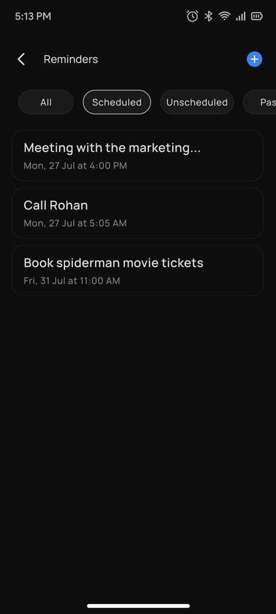
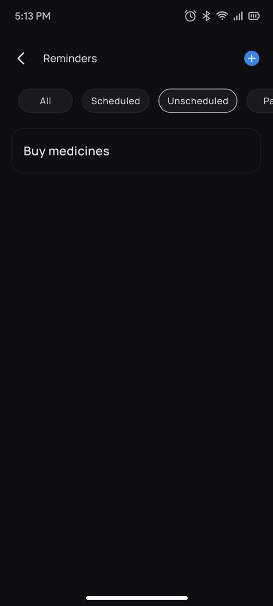
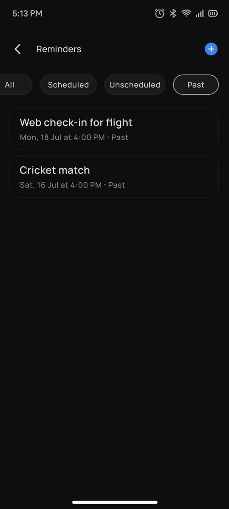
Add and edit. The form's defaults do the work so the common case needs almost no input: the notification toggle is on, the date is today, the time is one hour from now. Past dates are disabled outright, and choosing a past time disables Save with a clear reason, "Please choose a time later than the current time", so the user is stopped before an error, not scolded after one. Switching between scheduled and unscheduled keeps the values already entered, so toggling never costs the user their work.
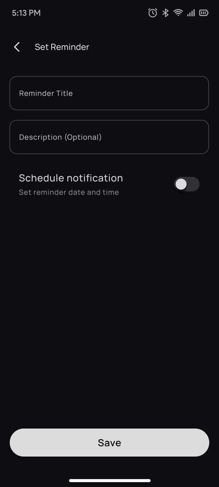
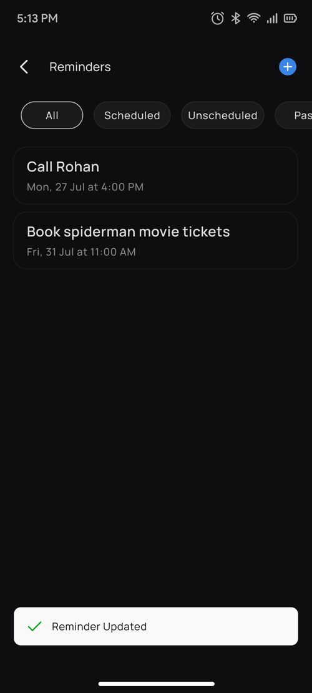
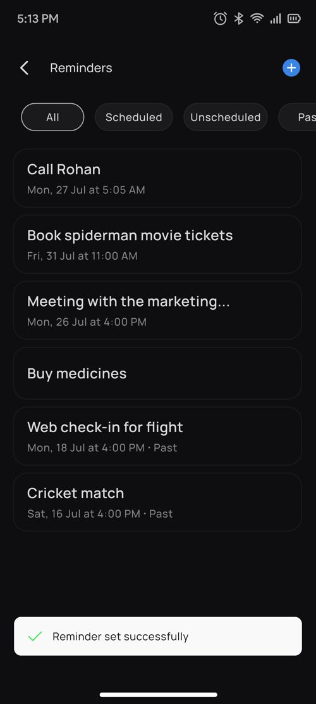
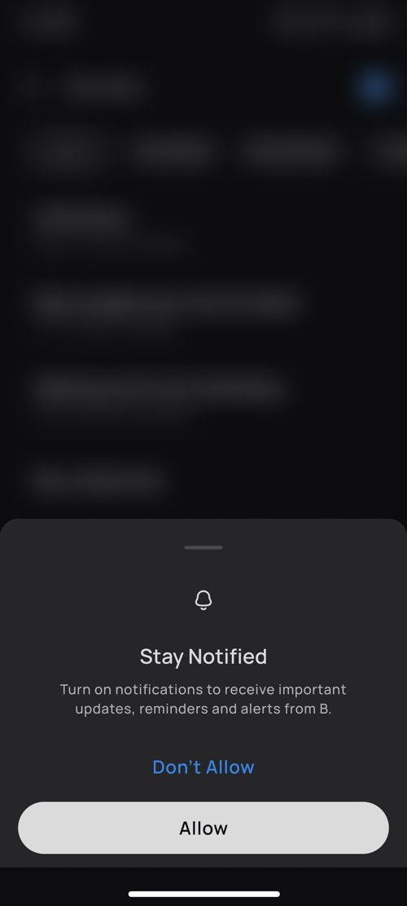
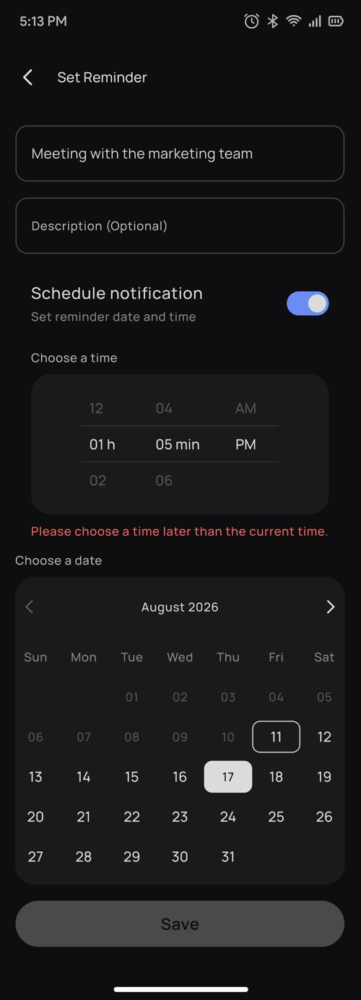
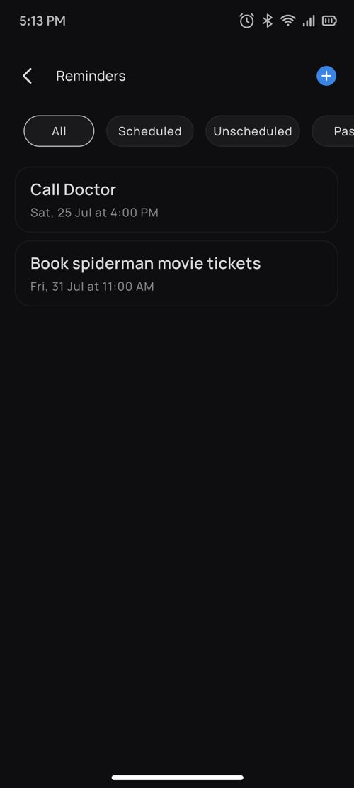
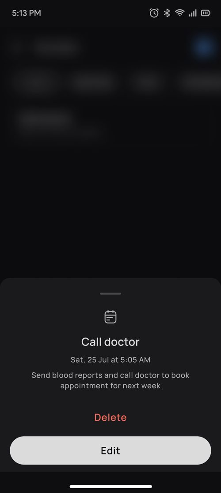
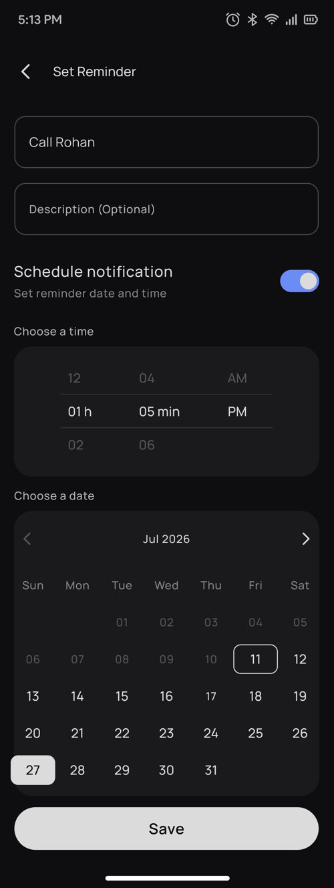
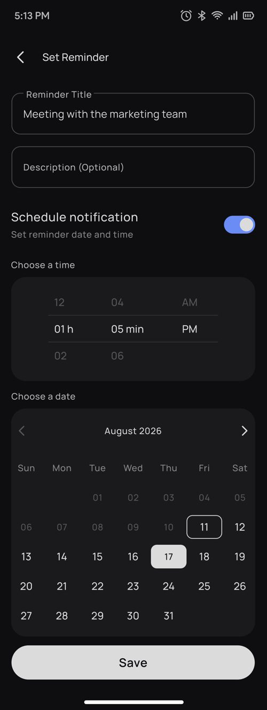
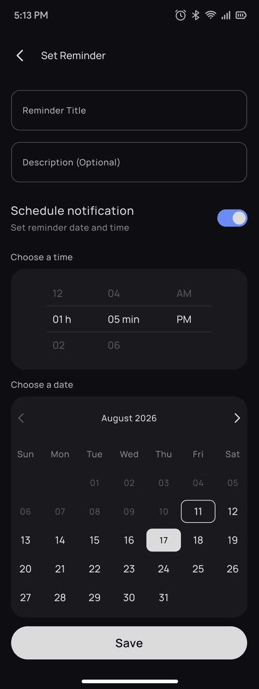
Notifications and permissions. A due reminder arrives as a phone notification; tapping it opens straight to that reminder's detail. Reminders need two permissions, general notifications and one-time (alarm) access, but I deliberately decoupled permission from saving. If the user taps "Not now," the reminder is still saved, and a quiet "Enable" chip waits on the relevant screens so they can grant access later without being nagged. The principle: never hold the user's data hostage to a settings decision.
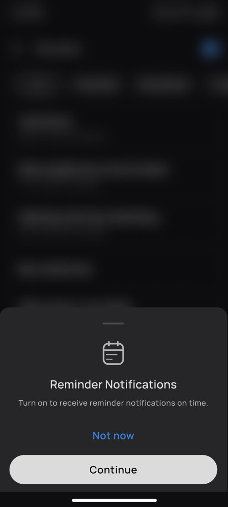
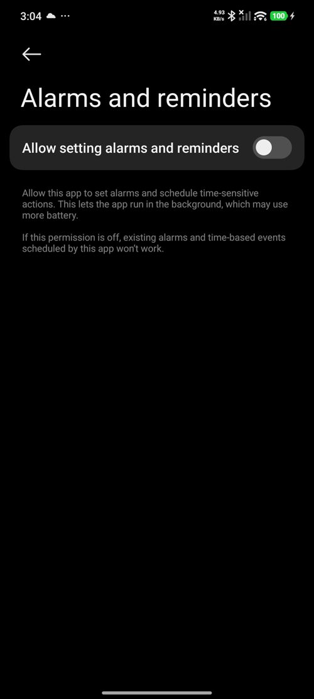
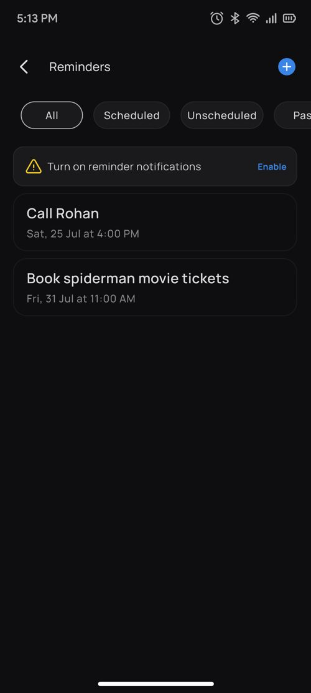
Empty and feedback states. A real zero state ("No saved reminders" with a New Reminder button) invites the first action instead of looking broken, and short toasts for set, updated and deleted close the loop so every action gets an acknowledgement.
10Glass connectivity, resolving the contradiction
This is where I settled the PRD's self-contradiction, and it came from one reframing. The spec treated "glasses not connected" as a single blocked state. But that lumps together things that have nothing to do with the glasses. So I asked the narrower question: what actually needs the glasses? The answer was just one thing, creating a reminder by voice. Viewing, editing, deleting, and getting notified all happen on the phone and never touch the glasses at all.
Once framed that way, the contradiction dissolved. Only voice creation depends on connection; everything else works in every state.
| Glasses state | Create by voice | Create in app | Edit / delete in app | Phone notification |
|---|---|---|---|---|
| Paired, connected | Yes | Yes | Yes | Yes |
| Paired, disconnected | No | Yes | Yes | Yes |
| Unpaired | No | Yes | Yes | Yes |
| Off or charging | No | Yes | Yes | Yes |
| Connected, no internet | Depends on storage | Yes or queued | Yes or queued | Existing reminders still notify |
This mattered because the whole feature is a promise about reliability. The clearest test of that promise: a user takes their glasses off to charge overnight and should still get their 7 AM reminder. Any design where "glasses off" means "reminder lost" fails the one thing Reminders exists to do.
11Text hierarchy research
This started from a small, telling observation. When people type a reminder, they write "Call Rohan." When they speak one, they say a full sentence: "Book spiderman movie ticket for Wednesday 4 PM show at Viviana." Voice has no length limit, and my list screens had been designed for short typed titles. A voice-first feature had quietly broken my own layouts.
So rather than patch one screen, I defined how headings and descriptions should behave in every place text appears, based on what each place is for.
| Where | Heading (title) | Subheading / description |
|---|---|---|
| Reminder list | One line, truncated with an ellipsis | Date and time only |
| Detail bottom sheet | Wraps up to 2 lines, no truncation | Full description, never truncated |
| Dashboard widget | One line, truncated with an ellipsis | Date and time only |
The logic is simple once named: lists are for scanning, the detail sheet is for reading. A scanning surface keeps every row the same height so the eye can move fast; a reading surface shows everything so nothing important is hidden. I then applied the same rule to other flows across the app, so long voice-made text behaves predictably everywhere, not just in Reminders. [Open: name the other flows where these rules were applied, and add the exact character limits if defined.]
12User flow
Reminders has three core flows: creating one in the app, creating one by voice on the glasses, and managing it afterwards. I mapped each end to end, including every branch, default and failure, so engineering and QA built against the same path instead of filling gaps by guesswork.
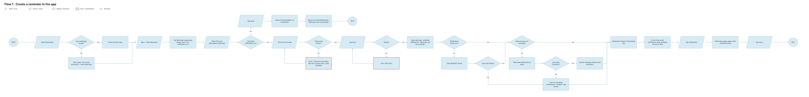
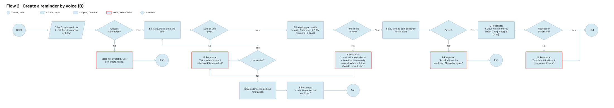
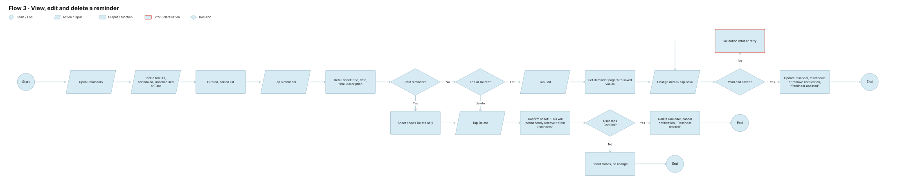
13Edge cases and behaviour rules
Finally, I documented how a reminder moves between states and what happens to its notification at each step, one reference so engineering and QA never had to decide behaviour on the fly. This table is the "boring" part of the work, and also the part that decides whether the feature feels trustworthy in the real world.
| Trigger | What happens |
|---|---|
| Reminder time is reached | Upcoming → Past |
| Date and time removed | Scheduled → Unscheduled, notification removed |
| Date and time added | Unscheduled → Upcoming, notification created |
| Past reminder edited to a future time | Past → Upcoming |
| Reminder deleted before it is due | Notification cancelled |
| Notification opened after deletion | Redirects to the reminder list |
| Permission revoked later | Permission prompt shown on next app open |
| App force-stopped | Notification still triggers |
| Save or delete fails | Reminder kept, retry offered |
| Empty title | Save blocked |
14Outcome & what's next
Reminders shipped as a complete voice-to-phone feature on Android and iOS. The real deliverable underneath the screens: four voice cases, six vague-input defaults, five glass-connectivity states and one text-hierarchy system that now runs across other flows in the app, all written down as rules any team could build against.
[Open: add real outcome data if available, QA results, adoption or feedback. No invented numbers.]
V2 scope. Ask about, edit and delete reminders by voice · image-based reminders with Buddy · reminder announcements played on the glasses · recurring reminders · changing the due notification time.
What's still open, honestly. One question I chose not to force an answer to: when a reminder is set in the app, I know exactly when to ask for notification permission, right after saving. But when it's set by voice, the user is looking at the world, not the phone, so there's no good moment to interrupt with a permission sheet. Rather than ship a jarring prompt at the wrong time, I flagged it as a known issue to solve properly, because a mistimed permission ask would undo the very hands-free feeling the feature is built on.
15What this taught me
On a screenless device, the conversation is the interface. There's no layout to lean on, the trust is carried entirely by what Buddy says and when it stays quiet. Good defaults and one clear read-back did more for confidence than any amount of UI could.
And as a lead, the most valuable thing I produced wasn't a screen. It was the set of rules behind the screens: what Buddy says, what depends on the glasses, how text behaves, what happens when things fail. Screens show one moment; rules decide every moment the screens don't show, and on a product like B, that's most of them.